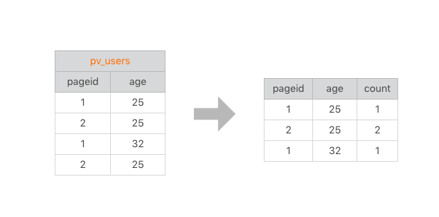
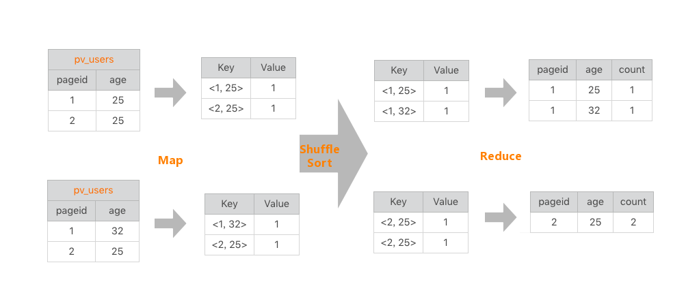
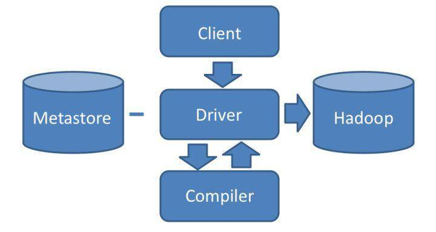
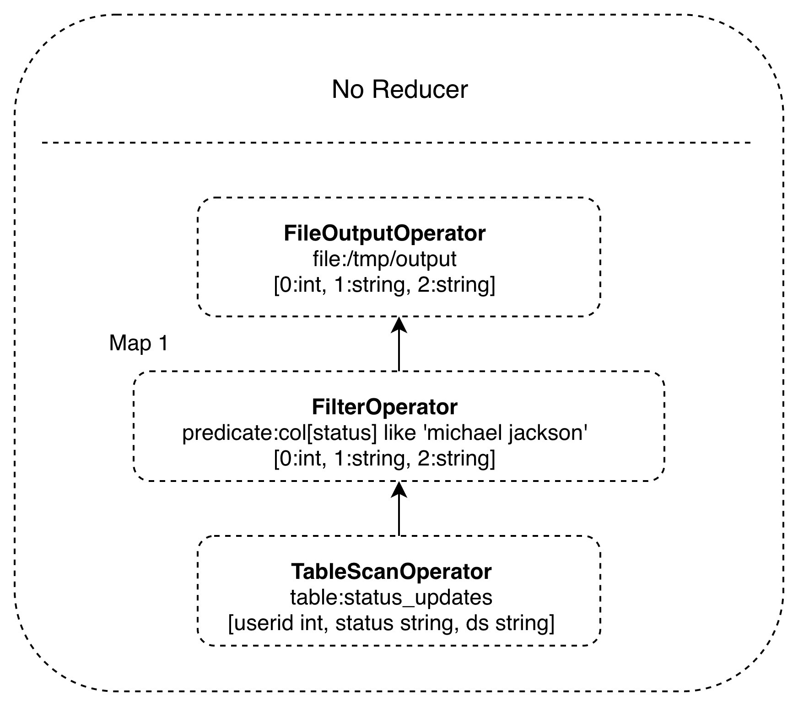
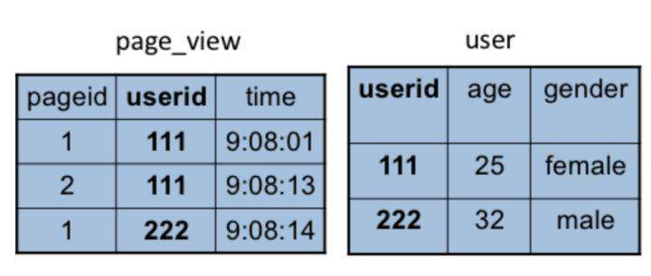
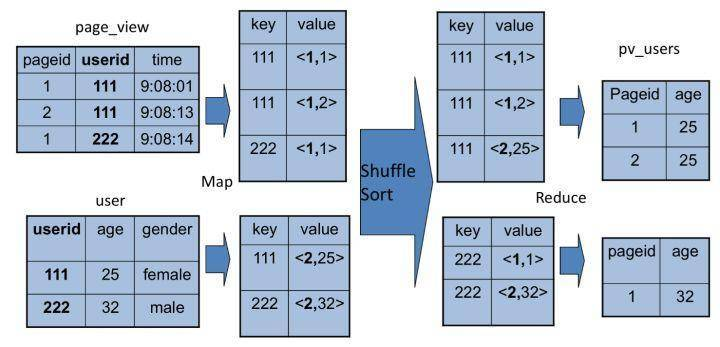

- 00 开篇词 为什么说每个软件工程师都应该懂大数据技术？.md
- 01 大数据技术发展史：大数据的前世今生.md
- 02 大数据应用发展史：从搜索引擎到人工智能.md
- 03 大数据应用领域：数据驱动一切.md
- 04 移动计算比移动数据更划算.md
- 05 从RAID看垂直伸缩到水平伸缩的演化.md
- 06 新技术层出不穷，HDFS依然是存储的王者.md
- 07 为什么说MapReduce既是编程模型又是计算框架？.md
- 08 MapReduce如何让数据完成一次旅行？.md
- 09 为什么我们管Yarn叫作资源调度框架？.md
- 10 模块答疑：我们能从Hadoop学到什么？.md
- 11 Hive是如何让MapReduce实现SQL操作的？.md
- 12 我们并没有觉得MapReduce速度慢，直到Spark出现.md
- 13 同样的本质，为何Spark可以更高效？.md
- 14 BigTable的开源实现：HBase.md
- 15 流式计算的代表：Storm、Flink、Spark Streaming.md
- 16 ZooKeeper是如何保证数据一致性的？.md
- 17 模块答疑：这么多技术，到底都能用在什么场景里？.md
- 18 如何自己开发一个大数据SQL引擎？.md
- 19 Spark的性能优化案例分析（上）.md
- 20 Spark的性能优化案例分析（下）.md
- 21 从阿里内部产品看海量数据处理系统的设计（上）：Doris的立项.md
- 22 从阿里内部产品看海量数据处理系统的设计（下）：架构与创新.md
- 23 大数据基准测试可以带来什么好处？.md
- 24 从大数据性能测试工具Dew看如何快速开发大数据系统.md
- 25 模块答疑：我能从大厂的大数据开发实践中学到什么？.md
- 26 互联网产品 + 大数据产品 = 大数据平台.md
- 27 大数据从哪里来？.md
- 28 知名大厂如何搭建大数据平台？.md
- 29 盘点可供中小企业参考的商业大数据平台.md
- 30 当大数据遇上物联网.md
- 31 模块答疑：为什么大数据平台至关重要？.md
- 32 互联网运营数据指标与可视化监控.md
- 33 一个电商网站订单下降的数据分析案例.md
- 34 A_B测试与灰度发布必知必会.md
- 35 如何利用大数据成为“增长黑客”？.md
- 36 模块答疑：为什么说数据驱动运营？.md
- 37 如何对数据进行分类和预测？.md
- 38 如何发掘数据之间的关系？.md
- 39 如何预测用户的喜好？.md
- 40 机器学习的数学原理是什么？.md
- 41 从感知机到神经网络算法.md
- 42 模块答疑：软件工程师如何进入人工智能领域？.md
- 所有的不确定都是机会——智慧写给你的新年寄语.md
- 第2季回归丨大数据之后，让我们回归后端.md
- 结束语 未来的你，有无限可能.md
11 Hive是如何让MapReduce实现SQL操作的？
前面我们讲过，MapReduce的出现大大简化了大数据编程的难度，使得大数据计算不再是高不可攀的技术圣殿，普通工程师也能使用MapReduce开发大数据程序。但是对于经常需要进行大数据计算的人，比如从事研究商业智能（BI）的数据分析师来说，他们通常使用SQL进行大数据分析和统计，MapReduce编程还是有一定的门槛。而且如果每次统计和分析都开发相应的MapReduce程序，成本也确实太高了。那么有没有更简单的办法，可以直接将SQL运行在大数据平台上呢？
在给出答案前，我们先看看如何用MapReduce实现SQL数据分析。
MapReduce实现SQL的原理
坚持学习到这里的同学一定还记得，我在专栏第7期留了一道思考题，对于常见的一条SQL分析语句，MapReduce如何编程实现？
SELECT pageid, age, count(1) FROM pv_users GROUP BY pageid, age;
错过这期内容的同学可以先返回第7期文章思考一下这个问题，思考之余也可以看看其他同学给出的方案，我看留言很多同学的思路都是正确的，我们来详细看看MapReduce实现SQL的原理。
这是一条非常常见的SQL统计分析语句，统计不同年龄的用户访问不同网页的兴趣偏好，对于产品运营和设计很有价值。具体数据输入和执行结果请看下面的图示。

左边是要分析的数据表，右边是分析结果。实际上把左边表相同的行进行累计求和，就得到右边的表了，看起来跟WordCount的计算很相似。确实也是这样，我们看下这条SQL语句的MapReduce的计算过程，按照MapReduce编程模型，map和reduce函数的输入输出以及函数处理过程分别是什么。
首先，看下map函数的输入Key和Value，我们主要看Value。Value就是左边表中每一行的数据，比如<1, 25>这样。map函数的输出就是以输入的Value作为Key，Value统一设为1，比如<<1, 25>, 1>这样。
map函数的输出经过shuffle以后，相同的Key及其对应的Value被放在一起组成一个
在reduce函数内部，Value集合里所有的数字被相加，然后输出。所以reduce的输出就是<<2, 25>, 2>。
讲起来有点拗口，我把这个过程画成了一张图，看起来就清楚多了。

这样一条很有实用价值的SQL就被很简单的MapReduce计算过程处理好了。
在数据仓库中，SQL是最常用的分析工具，既然一条SQL可以通过MapReduce程序实现，那么有没有工具能够自动将SQL生成MapReduce代码呢？这样数据分析师只要输入SQL，就可以自动生成MapReduce可执行的代码，然后提交Hadoop执行，也就完美解决了我们最开始提出的问题。问题的答案，也就是这个神奇的工具就是Hadoop大数据仓库Hive。
Hive的架构
Hive能够直接处理我们输入的SQL语句（Hive的SQL语法和数据库标准SQL略有不同），调用MapReduce计算框架完成数据分析操作。下面是它的架构图，我们结合架构图来看看Hive是如何实现将SQL生成MapReduce可执行代码的。

我们通过Hive的Client（Hive的命令行工具，JDBC等）向Hive提交SQL命令。如果是创建数据表的DDL（数据定义语言），Hive就会通过执行引擎Driver将数据表的信息记录在Metastore元数据组件中，这个组件通常用一个关系数据库实现，记录表名、字段名、字段类型、关联HDFS文件路径等这些数据库的Meta信息（元信息）。
如果我们提交的是查询分析数据的DQL（数据查询语句），Driver就会将该语句提交给自己的编译器Compiler进行语法分析、语法解析、语法优化等一系列操作，最后生成一个MapReduce执行计划。然后根据执行计划生成一个MapReduce的作业，提交给Hadoop MapReduce计算框架处理。
对于一个较简单的SQL命令，比如：
SELECT * FROM status_updates WHERE status LIKE ‘michael jackson’;
它对应的Hive执行计划如下图。

Hive内部预置了很多函数，Hive的执行计划就是根据SQL语句生成这些函数的DAG（有向无环图），然后封装进MapReduce的map和reduce函数中。这个例子中，map函数调用了三个Hive内置函数TableScanOperator、FilterOperator、FileOutputOperator，就完成了map计算，而且无需reduce函数。
Hive如何实现join操作
除了上面这些简单的聚合（group by）、过滤（where）操作，Hive还能执行连接（join on）操作。文章开头的例子中，pv_users表的数据在实际中是无法直接得到的，因为pageid数据来自用户访问日志，每个用户进行一次页面浏览，就会生成一条访问记录，保存在page_view表中。而age年龄信息则记录在用户表user中。

这两张表都有一个相同的字段userid，根据这个字段可以将两张表连接起来，生成前面例子的pv_users表，SQL命令是
SELECT pv.pageid, u.age FROM page_view pv JOIN user u ON (pv.userid = u.userid);
同样，这个SQL命令也可以转化为MapReduce计算，连接的过程如下图所示。

从图上看，join的MapReduce计算过程和前面的group by稍有不同，因为join涉及两张表，来自两个文件（夹），所以需要在map输出的时候进行标记，比如来自第一张表的输出Value就记录为<1, X>，这里的1表示数据来自第一张表。这样经过shuffle以后，相同的Key被输入到同一个reduce函数，就可以根据表的标记对Value数据求笛卡尔积，用第一张表的每条记录和第二张表的每条记录连接，输出就是join的结果。
所以我们如果打开Hive的源代码，看join相关的代码，会看到一个两层for循环，对来自两张表的记录进行连接操作。
小结
在实践中，工程师其实并不需要经常编写MapReduce程序，因为网站最主要的大数据处理就是SQL分析，也因此Hive在大数据应用中的作用非常重要。
后面随着Hive的普及，我们对于在Hadoop上执行SQL的需求越加强烈，对大数据SQL的应用场景也多样化起来，于是又开发了各种大数据SQL引擎。
Cloudera开发了Impala，这是一种运行在HDFS上的MPP架构的SQL引擎。和MapReduce启动Map和Reduce两种执行进程，将计算过程分成两个阶段进行计算不同，Impala在所有DataNode服务器上部署相同的Impalad进程，多个Impalad进程相互协作，共同完成SQL计算。在一些统计场景中，Impala可以做到毫秒级的计算速度。
后来Spark出道以后，也迅速推出了自己的SQL引擎Shark，也就是后来的Spark SQL，将SQL语句解析成Spark的执行计划，在Spark上执行。由于Spark比MapReduce快很多，Spark SQL也相应比Hive快很多，并且随着Spark的普及，Spark SQL也逐渐被人们接受。后来Hive推出了Hive on Spark，将Hive的执行计划转换成Spark的计算模型，当然这是后话了。
此外，我们还希望在NoSQL的数据库上执行SQL，毕竟SQL发展了几十年，积累了庞大的用户群体，很多人习惯了用SQL解决问题。于是Saleforce推出了Phoenix，一个执行在HBase上的SQL引擎。
这些SQL引擎基本上都只支持类SQL语法，并不能像数据库那样支持标准SQL，特别是数据仓库领域几乎必然会用到嵌套查询SQL，也就是在where条件里面嵌套select子查询，但是几乎所有的大数据SQL引擎都不支持。然而习惯于传统数据库的使用者希望大数据也能支持标准SQL，我当时在Intel的大数据团队就决定开发一款可以支持标准SQL的大数据引擎，我作为最主要的开发者参与其中。江湖传说，开发数据库、编译器、操作系统是程序员的三大梦想。我将在专栏里专门讲述如何设计、开发一个大数据SQL引擎，一起感受开发数据库是怎样一种体验。
最后我们还是回到Hive。Hive本身的技术架构其实并没有什么创新，数据库相关的技术和架构已经非常成熟，只要将这些技术架构应用到MapReduce上就得到了Hadoop大数据仓库Hive。但是想到将两种技术嫁接到一起，却是极具创新性的，通过嫁接产生出的Hive可以极大降低大数据的应用门槛，也使Hadoop大数据技术得到大规模普及。
在我们工作中也可以借鉴一下这种将两种技术嫁接到一起产生极大应用创新性的手段，说不定下一个做出类似Hive这种具有巨大应用价值技术产品的就是你。
思考题
在软件编程的上古时代，各种编程语言有各种编译器，将软件工程师编写的程序编译成可执行代码。软件工程师必须要在另外一个文本编辑器里将代码编写好，然后保存，再调用编译器对这个程序源代码文件进行编译。
后来有人把编译器集成到文本编辑器里面，工程师可以在文本编辑器里面编写代码、编译调试代码，工作效率得到极大提高，这就是软件开发的集成开发环境IDE。
类似这样将两个（或更多个）软件集成（嫁接）到一起，产生巨大创新应用价值的软件产品还有哪些？
欢迎你写下自己的思考或疑问，与我和其他同学一起讨论。
© 2019 - 2023 Liangliang Lee. Powered by gin and hexo-theme-book.